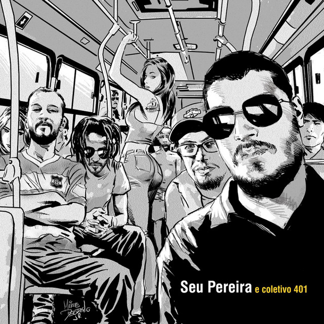

Biografia

De João Pessoa/PB, o grupo surgiu em 2009 através da união de amigos que tinham um transporte coletivo em comum, o 401, que cruza a capital paraibana até o bairro Altiplano. O ônibus foi tema para o quadrinista Mike Deodato Jr., que desenvolveu a capa do primeiro disco, homônimo, lançado em 2013. A imagem ilustra bem a pluralidade do trabalho de Seu Pereira e Coletivo 401, marcado pelo hibridismo musical e pelo olhar atento à vida cotidiana. Parceria com outro grande ilustrador paraibano veio também no último disco Eu Não Sou Boa Influência Pra Você (2017): Shiko é o artista que assina a capa do álbum. Seu Pereira e Coletivo 401 é composto por Jonathas Pereira Falcão (vocal e guitarra), Chico Correa (guitarra), Thiago Sombra (baixo) e Victor Rama (bateria) na formação original. A banda também é acompanhada pelos músicas Daniel Lima (Trombone) e Felipe Gomes (Trompete). A banda também chegou a cruzar as fronteiras do país, com performances em países da África e da Europa. O destaque lá fora aconteceu especialmente após o lançamento, em 2015, do EP Canções de Verão do Seu Pereira e Coletivo 401, pelo projeto Seu Pereira e Musa Caliente. O disco mais recente é Eu Não Sou Boa Influência Pra Você, de 2017. Em 2019, o grupo percorreu 6.500 km dentro de uma van com o projeto “Seu Pereira na BR 101”, vencedor do edital Natura Musical, fazendo uma turnê por nove estados com shows e oficinas musicais, além da gravação de um documentário.
Discografia
- 2013: Seu Pereira e Coletivo 401 
- 2017: Eu Não Sou Boa Influência pra Você
- 2025: Obsoleto

Legado, Estilo e Identidade
Seu Pereira e Coletivo 401 é muito mais do que uma banda: é um reflexo da cultura urbana nordestina contemporânea. Com uma linguagem direta e poética, o grupo retrata a vida cotidiana com doses de crítica, humor e emoção, conquistando públicos diversos por onde passa. Desde suas origens em João Pessoa, a banda se destacou por sua autenticidade e por uma postura artística que valoriza a independência e a força das expressões regionais.
Misturando gêneros como rock, soul, samba, frevo, reggae e ritmos locais, Seu Pereira criou uma identidade sonora única e inconfundível. Cada música é construída com arranjos criativos e letras que parecem conversas reais — e talvez por isso gerem tanta identificação com o público. O vocal expressivo de Jonathas Pereira, aliado à versatilidade instrumental da banda, transforma cada show em uma experiência vibrante e catártica.
Essa mistura de estilos e a liberdade estética do grupo contribuíram para consolidar seu nome como referência na nova música brasileira. A banda não apenas sobreviveu ao tempo e às transformações do cenário musical, mas ajudou a moldá-lo, influenciando novos artistas e fortalecendo a cena independente. O 401 já percorreu palcos por todo o país e até fora dele, sempre levando uma mensagem carregada de identidade, afeto e resistência cultural.